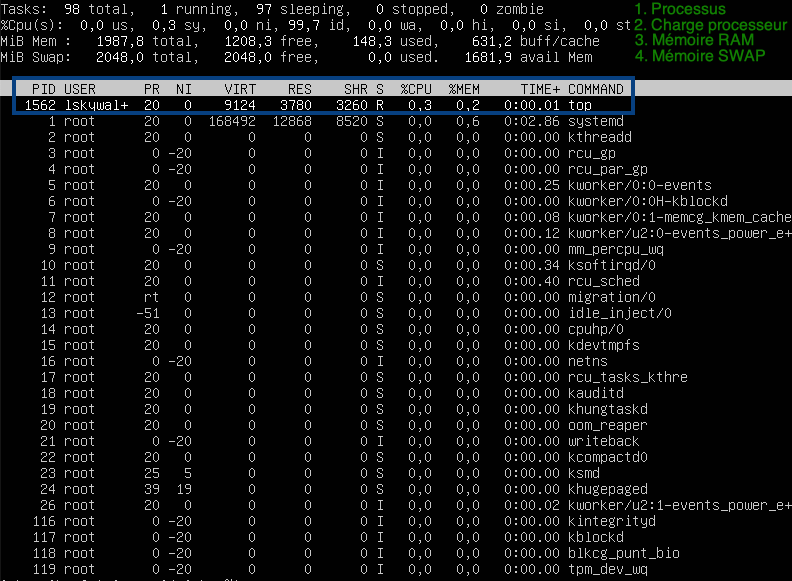

Compétences qui vont être acquises
- Visualiser la charge système
- Modifier la configuration du système
- Gérer les logiciels (Installation / Désinstallation)
- Afficher les informations du réseau
- Travailler avec des archives (création/compression/décompression)
- Écrire et éxécuter un mini programme très simple
À ton avis, la commande ‘TOP’ sert à quoi ?
Système d'exploitation
Toutes les activités sont basées sur les opérations décrites ici.
Un système d'exploitation est un peu comme un chef d'orchestre ayant pour musiciens des composants électroniques.
On peut observer son travail d'orchestration avec la commande top (écrire top puis valider avec la touche enter)
top
Décryptage du résultat

Partie 1 : Résumé
Cette partie comporte 3 points:
- Le nombre de processus : 98 programmes chargés dont 1 en cours d'éxécution et 97 qui dorment.
- L'utilisation du processeur: 0.3% utilisé et 99.7% en attente de travail.
- L'utilisation de la RAM : 1987.8Mo disponible dont 148.3Mo utilisés et 1208.3Mo de libres.
- L'utilisation du SWAP : 2Go au total dont 0 utilisé.
Partie 2 : Détail des processus
Le processus en haut de la liste est justement celui qui permet d'afficher les informations sur le processus.
Voici la traduction des colonnes:
- PID: process id => Numéro d'identification du programme (géré par l'OS et permet de l'arrêter par exemple)
- USER: utilisateur qui a lancé le processus
- PR: priorité (-20 = priorité la plus importante)
- NI: priorité demandée par le programme
- VIRT: mémoire virtuelle utilisée par le programme
- RES: mémoire RAM utilisée par le programme
- SHR: partie de mémoire partagée dans RES
- S: statut (R=running, s=sleeping, i=idle, etc...)
- %CPU: pourcentage d'utilisation du processeur
- %MEM: pourcentage d'utilisation de la mémoire
- COMMAND: nom du programme
Voulez-vous en savoir plus sur le résultat de la commande top ou vous demandez-vous où peut-on trouver les informations décrites précédemment sans l'utilisation d'Internet ?
Pour cela, il existe la commande man (manuel d'utilisation) :
man top
Une fois la commande lancée, on peut:
- Quitter en appuyant sur q
- Tourner les pages (avancer la lecture) en appuyant sur enter
- Chercher un terme en appuyant sur / puis en saisissant un mot puis en appuyant sur enter. Ensuite, on appuie sur n (next=suivant) pour chercher le prochain terme
En utilisant ce qui a été expliqué, que représentent les lettres us et sy à la deuxième ligne du résultat de la commande top ?